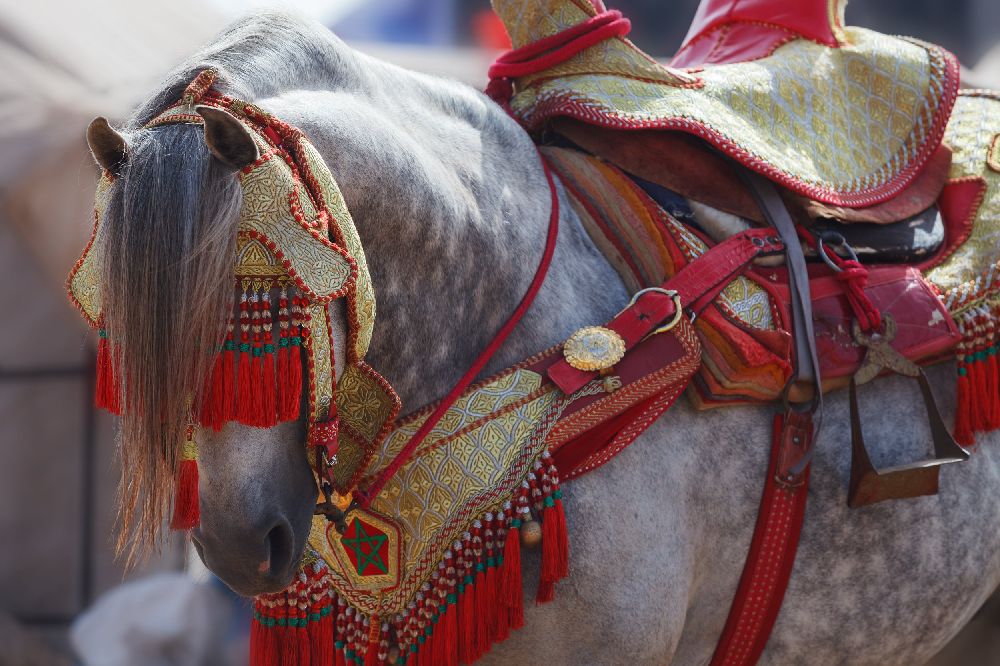
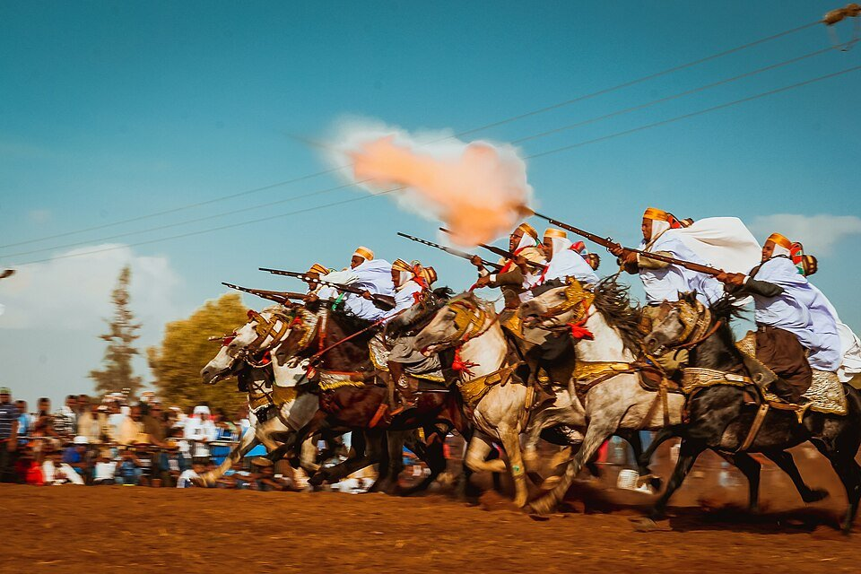
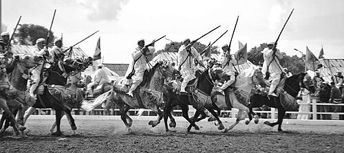
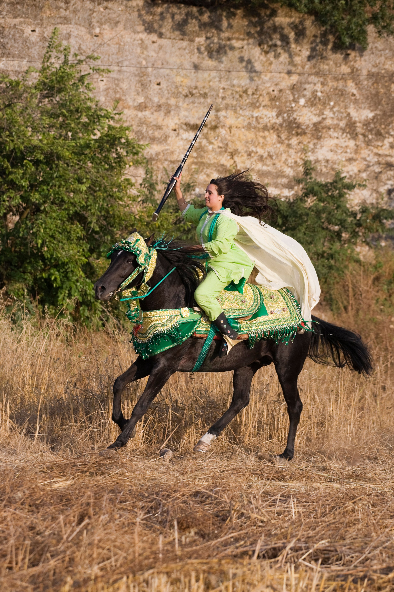
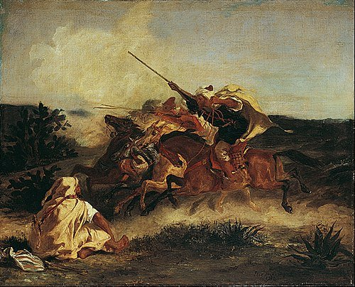
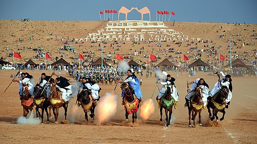

The Pulse of Tbourida: Morocco's Equestrian Spectacle
Introduction
Imagine a line of horses, flanks tight with muscle, throwing up red dust under the Moroccan sun. The riders wear flowing robes, muskets primed, and move as one body. At the leader's command, they surge, level their rifles, and fire in near-perfect unison. That single thunderclap is the heartbeat of Tbourida.

What Is Tbourida?
Tbourida, often called Fantasia, is a traditional Moroccan equestrian performance that recreates historical cavalry charges. Teams of riders gallop in formation and aim to discharge their muskets at precisely the same instant at the end of the run.
It is both ceremony and sport: a test of horsemanship, timing, nerve, and presentation. More than spectacle, it functions as a living marker of tribal memory, local pride, and continuity with Morocco's mounted past.

When and Where
Performed by male and increasingly female riders known as mejouads, Tbourida appears at moussems, national holidays, and agricultural festivals throughout the country. Major events are held in Meknes, El Jadida, and Fes, especially around autumn harvest celebrations.
For visitors, the Salon du Cheval in El Jadida and national celebrations near Rabat and Meknes are among the most accessible windows into the tradition.

Origins and Evolution
Tbourida began as a practical cavalry drill among Berber and Arab horsemen, where cohesion under pressure could decide the outcome of conflict. The synchronized charge and musket volley signaled unity, readiness, and martial discipline.
As warfare changed, the form endured and shifted toward ritual and community expression. Today teams of ten to fifteen riders are judged on timing, alignment, and the precision of their final shot. Excellence depends as much on discipline as on bravery.
Once overwhelmingly male, the tradition now includes female troops performing to the same competitive standard, reflecting both continuity and cultural change.

The Horses
At the center of the ritual are the horses themselves, primarily Barb and Arab-Barb lines bred for stamina, agility, and composure. The Barb's short back, dense bone, and powerful hindquarters suit explosive acceleration and abrupt collective stops.
Arab-Barb horses add refinement and sensitivity while retaining resilience. Training focuses on noise tolerance, straight formation gallops, and instant response to minimal rider cues. In a discipline where one mistimed stride can break the final shot, temperament is everything.

Conclusion
Tbourida endures because it carries more than pageantry. Beneath the embroidered tack and gunpowder smoke lives an older memory: horsemanship as survival, belonging, and collective identity. The thunder of the synchronized shot is brief, but what it represents remains deeply rooted.

Related Stories

The Horses of the Camargue
Tough, white, and semi-feral, the Camargue horse is a living part of southern France's wetland culture. Its story, like Tbourida, is one of landscape shaping horse tradition.

The Australian Stock Horse: Built for the Bush
Forged from necessity on Australia's vast stations, the Australian Stock Horse reflects the same union of horse, utility, and identity that underpins Morocco's mounted traditions.

Old Billy the Barge Horse: The Long Life of a Working Legend
Born in 1760, Old Billy worked Britain's canals for over six decades, a reminder that horse traditions worldwide were built on discipline, labour, and partnership.